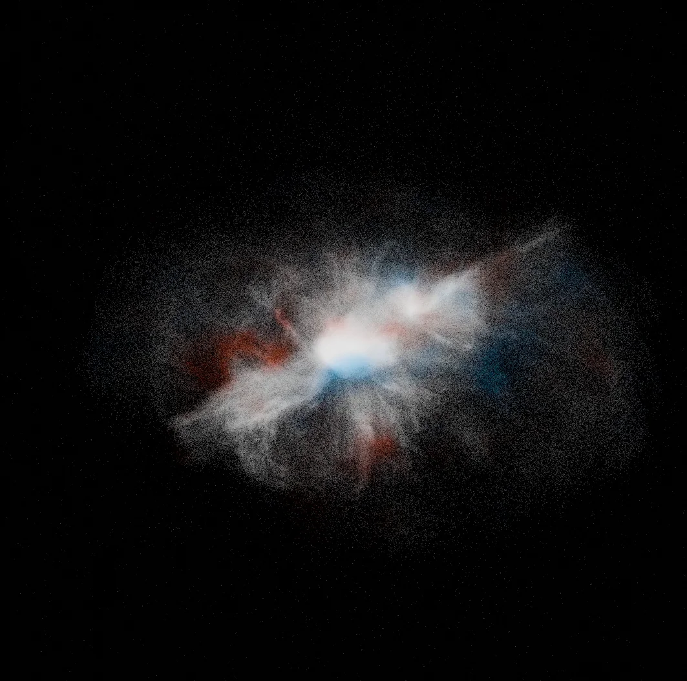
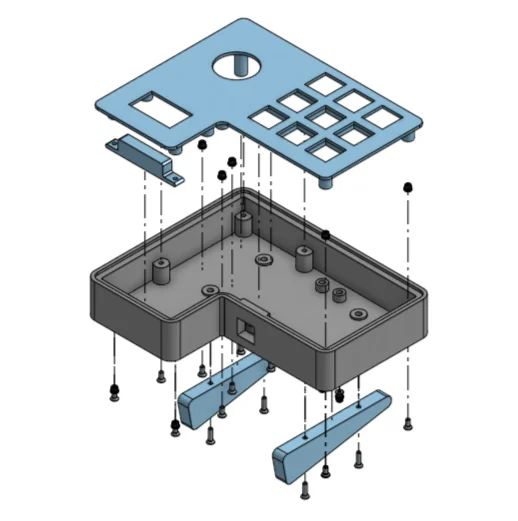
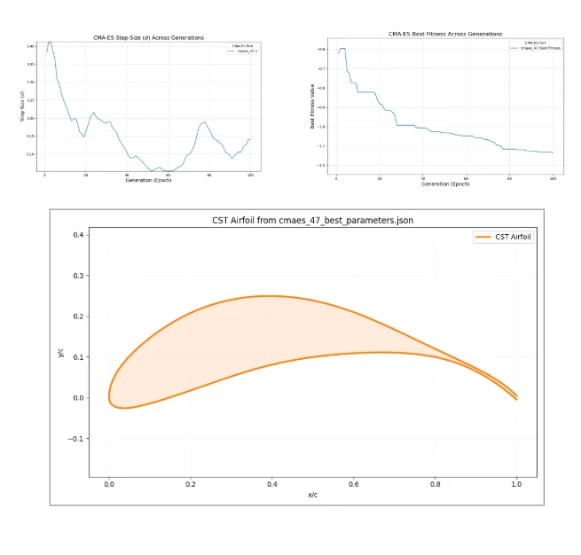
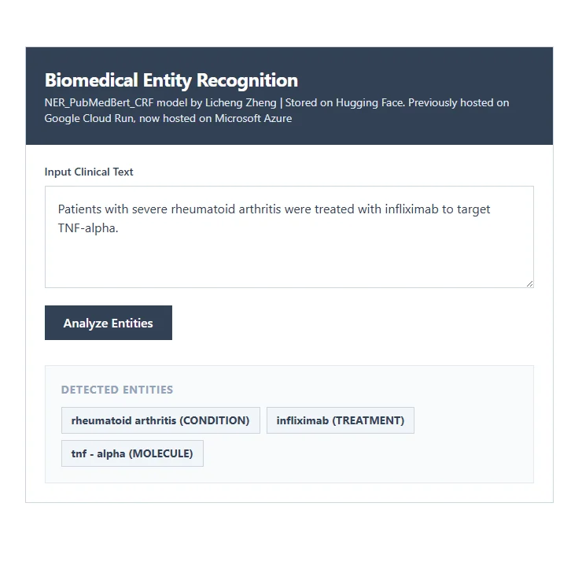
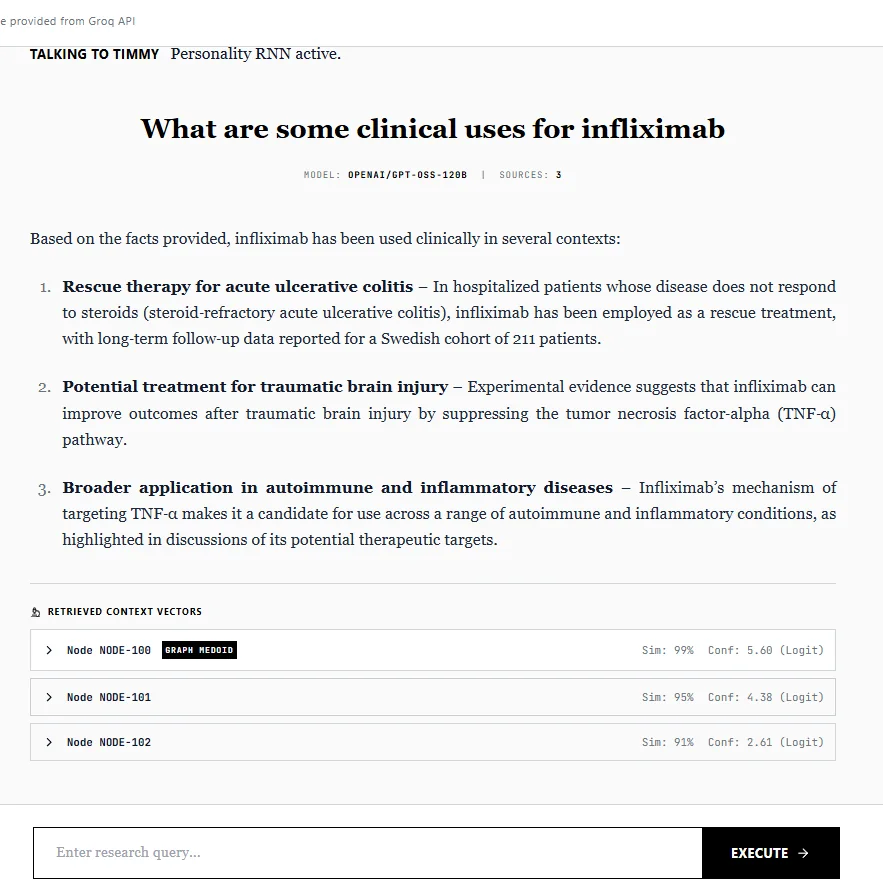
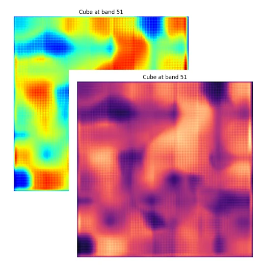

About Me
Context and BackgroundI am a second-year Computer Science Co-op student at the University of Toronto Scarborough. I am deeply interested in artificial intelligence and the hardware that powers it—it never ceases to amaze me that a model I built can learn to solve a problem I never learned to solve myself.
I thrive on working within strict constraints. Whether I am squeezing performance out of limited VRAM, or training models on scarce data for the University of Toronto Aerospace Team, I love finding the creative, low-level solutions that unlimited resources would otherwise let me ignore.
Project Showcase
Some of the projects that I've been working on
Compoxel N-Body Gravity Engine
A high-performance, massively parallel N-body gravity engine built in pure C++ and CUDA that scales to simulate over 10 million entities entirely in VRAM.

Custom 9-Key Hardware Macropad
A custom mechanical macropad with an OLED display that functions as a hardware-level 'Rubber Ducky' via USB HID.

Wing and Propeller Optimizer
An automated optimization pipeline for high-efficiency airfoils utilizing multiprocessing and NeuralFoil evaluations.

BioNERBERT Inference Pipeline
A containerized, serverless inference pipeline deployed on Google Cloud Run for a custom Biomedical Named Entity Recognition (NER) model.

Timmy and Tommy Cognitive Architecture
Retrieval-augmented generation (RAG) research assistants integrating recurrent neural networks (RNNs) for persona classification.

Hyperspectral VAE
A Variational Autoencoder designed for hyperspectral data distribution compression, utilizing combined MSE and KL Divergence loss.